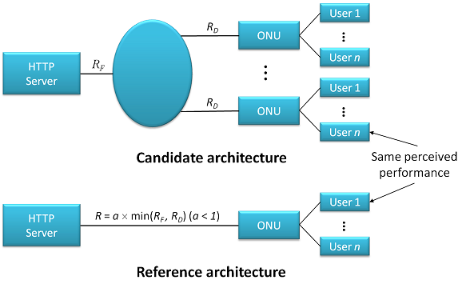

This is the GitHub page of inet-hnrl — a new fork of inet — developed for hybrid networking research, which provides new models in both optical and wireless networking areas and their hybrid. For updates and news, please visit the project wiki.
Currently the following major models and research frameworks have been implemented:
This implements models for the hybrid TDM/WDM-PON under the Stanford University aCCESS-Hybrid PON (SUCCESS-HPON) architecture1 2. Various design issues and the current status of implementations are described in a recent paper submitted to OMNeT++ 2011 workshop3.
This is the framework where one can carry out a comparison study of a new NGOA architecture with respect to a reference, point-to-point architecture based on the notion of equivalent circuit rate (ECR)4. The configuration and NED files for this framework are located under "examples/ngoa" directory, whose results are reported in recent submissions5 6 7.

1. Fu-Tai An, David Gutierrez, Kyeong Soo Kim, Jung Woo Lee, and Leonid G. Kazovsky, "SUCCESS-HPON: A next-generation optical access architecture for smooth migration from TDM-PON to WDM-PON," IEEE Communications Magazine - Optical Communications Supplement Special Issue on Optical Networking Testbeds (Part 2), vol. 43, no. 11, pp. S40-S47, Nov. 2005. [IEEE]
2. Kyeong Soo Kim, David Gutierrez, Fu-Tai An, and Leonid G. Kazovsky, "Design and performance analysis of scheduling algorithms for WDM-PON under SUCCESS-HPON architecture," IEEE/OSA Journal of Lightwave Technology, vol. 23, no. 11, pp. 3716-3731, Nov. 2005. [IEEE]
3. Kyeong Soo Kim, "Integration of OMNeT++ hybrid TDM/WDM-PON models into INET Framework," submitted to OMNeT++ Workshop 2011, Nov. 25, 2010. [HNRL]
4. N. K. Shankaranarayanan, Zhimei Jiang, and Partho Mishra, "User-perceived performance of Web-browsing and interactive data in HFC cable access networks," Proc. of ICC 2001, Helsinki, Finland, vol. 4, pp. 1264-1268, Jun. 2001. [IEEE]
5. Kyeong Soo Kim, "An equivalent circuit rate-based study of next-generation optical access architectures," presented at OMNeT++ Workshop 2010, Malaga, Spain, Mar. 19, 2010. [ACM]
6. Kyeong Soo Kim, "An equivalent circuit rate-based study of 10-Gb/s next-generation optical access architectures," submitted to Access Systems and Networks Track of ICC 2011, Sep. 19, 2010. [HNRL]
7. Kyeong Soo Kim, "An equivalent circuit rate-based study of 10-Gb/s next-generation optical access architectures," (Extended version) submitted to OSA/IEEE Journal of Optical Communications and Networking (JOCN), Nov. 8, 2010. [HNRL]